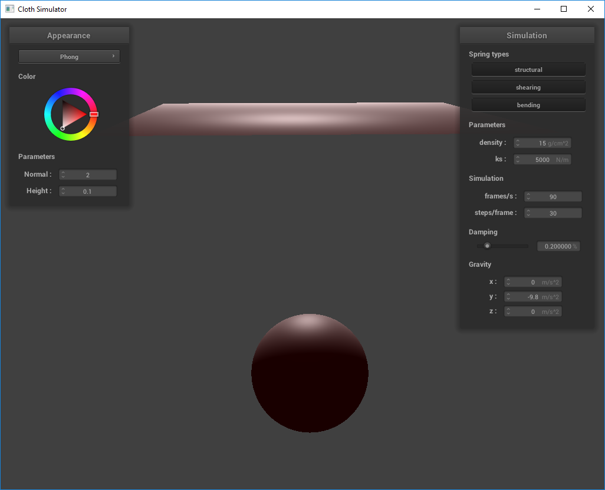
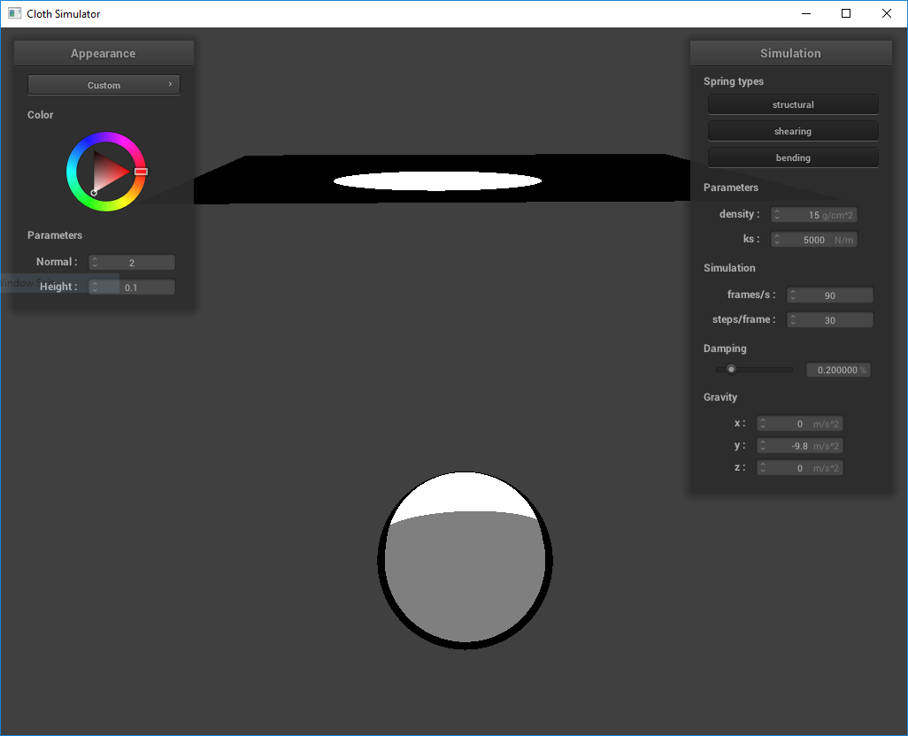

Extend Project 4 to create four of my own shaders inspired by the four elements. Solo team.
When running my raytracing programs in project 3, my CPU was taking some heat (especially with naive implementations). My PC actually crashed once. And this is all for rendering a single still frame! If this is how all graphics are made, then how am I able to play games in real time with 100+ fps without my computer blowing up? That's where a GPU comes in. GPUs run programs in parallel, implementing parts of the graphics pipeline (vertex and/or fragment processing) at much faster speeds. These programs are called shaders.
My challenge is in developing a deep understanding of what shaders are--at least enough to implement some cool ones successfully. Because though the significance of shaders in producing high quality real time graphics was pointed out in class, the only explanation of what they actually are and how they work was a few minutes of one lecture that gave an overview of the rasterization pipeline (lecture 6) that, until I went back to review just now, totally flew over my head.
In other words, the problem I am trying to solve is my ignorance on real time graphics. As a gamer I feel a sense of obligation to learn more about this topic, and my plan to address it is to extend the portion of a project that leverages the GPU, to leverage it even further, and develop a good understanding of programs that run on GPU.
Graphics Pipeline
References:
Project 4: Part 5
Learn OpenGL
Shaders 101 by Makin' Stuff Look Good
Toon Shading Wikibooks Page
Shadertoy for inspiration
Hi John! Thank you for the thoughtful and kind feedback. You're entirely correct in pointing out that I lacked a technical approach in my proposal. Frankly, at that point I hadn't completed the shaders portion of project 4 yet so didn't even know what GLSL looked like yet, and of course that showed in my proposal :').
I'm in a bit of a pickle and would love some advice. Here's what I've done so far:
Along the way I was looking for examples that I could use as reference but it seems that I had a misunderstanding of shaders. If I understand them correctly now, I believe I have to find a specific 3D object/scene that has enough complexities to it (curves, shadows, etc.) such that the lighting and colors can actually be tweaked to produce the animated/toon effect I'm looking for, i.e. even if I had a working shader, using it on a sphere won't work. Thus my job here is not just to write shaders but to also create my own scenes (or find them? But I haven't been able to do that). Which makes my goal more far reaching than I anticipated.
I also realized that simply sampling a texture of a PNG of the four elements could do the trick, but that's lame.
I have WebGL running, can reproduce shaders from proj4 in WebGL syntax, but no longer believe in my initial goal of the four elements :(. I'm stuck on how to render different objects (e.g. a water drop?) and how I can go beyond texture sampling to produce something that looks like air/water/earth/fire that actually utilizes the course material on radiometry/photometry and isn't just a cool animation. I'm worried that if I venture into the world of three.js or other APIs that I'm unfamiliar with that I'll be spending too much time on learning how to use them than actually practicing the course content and implementing shaders. Any guidance would be much appreciated.
|

|

|